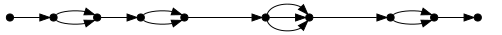

Edges, lines and scaffolds
A DISCOVAR de novo assembly is a graph whose edges represent DNA
sequences. Within any assembly one can find regions that are essentially linear.
We call these lines. Here is an example:
This line has four cells. In this case, for each cell, there
are two paths across the cell, except for the third cell, which has three.
Any line can be completely linearized by replacing each cell by parallel
edges (representing the paths across it), like this:

Multiple paths within a cell may reflect biological differences, such as
heterozygous sites, or somatic mutations. Similarly a line could represent
multiple, highly similar loci (which would be reflected in the observed copy
number). Partial phasing will sometimes lead to more than two paths.
However multiple paths can also represent non-biological differences,
such as those arising at loci that are very hard to sequence, and for which
consequently the assembly is unable to determine the exact sequence, instead
providing alternatives.
We allow cells having no paths across, representing captured gaps, and
displayed in files below using 100 Ns.
DISCOVAR de novo assemblies are symmetric: for each edge, there is
a reverse complement edge, and for each line, there is a reverse complement line.
DISCOVAR de novo provides several output forms from which you
can select:
- a.fasta = fasta file of edges
- a.lines = binary file of lines, mathematically a
vec<vec<vec<vec<int>>>>, in which the ints are edge ids
- a.lines.efasta* = standard scaffold efasta file, which shows {s1,...,sn}
for the ALTERNATIVES associated to a given cell
- a.lines.fasta* = standard scaffold fasta file, obtained by taking the FIRST
path through each cell; LOSES INFORMATION
- a.lines.src = human-readable form of a.lines, represented using nested
brackets {...}
* 'Duplicate' reverse complement lines have been removed from these files.
Also for circular chromosomes or episomes, the header line is labeled
'circular' and the ends of the sequence overlap by exactly K-1 bases (K = 200).
We invite requests for alternative forms.